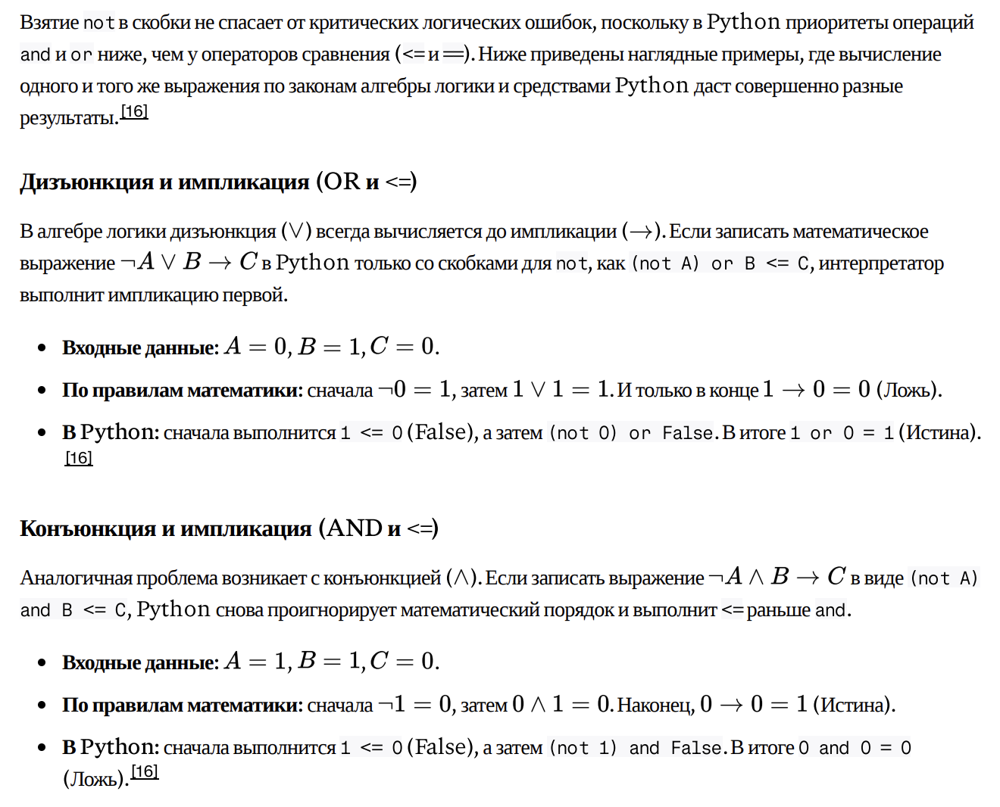
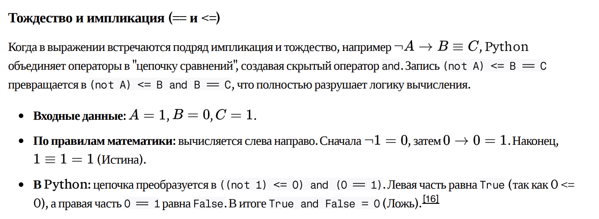

--- 
---
<!DOCTYPE html>
<html lang="ru">
<head>
  <meta charset="UTF-8" />
  <meta name="viewport" content="width=device-width, initial-scale=1" />

  <title>Задание 2</title>

  <link rel="stylesheet" href="../../css/style.css" />
  <link rel="stylesheet" href="../assets/task-page.css" />
  <link rel="icon" href="../../favicon.ico" type="image/x-icon">

  <!-- Опционально: MathJax для формул -->
  <script>
    window.MathJax = { tex: { inlineMath: [['\\(','\\)'], ['$', '$']] } };
  </script>
  <script defer src="https://cdn.jsdelivr.net/npm/mathjax@3/es5/tex-mml-chtml.js"></script>

  <!-- Конфиг конкретной страницы (меняешь только его на других заданиях) -->
  <script>
    window.TASK_PAGE_CONFIG = {
      pageTitle: "Задание 2",
      localTasksUrl: "task2-other.json",
      themes: [
        {          
          title: "Теория",
          tasks: [
            { type: "theory", title: "Теория", text: `
                <p>
                  <a href="https://vkvideo.ru/video-205865487_456240411" target="_blank">Теория по заданию (VK Видео)</a>

                  <br><br>Задание 2 - достаточно простое задание, особенно если мы говорим про те задания, которые давали на ЕГЭ. Тем не менее
                  настоятельно рекомендую прорешать все задачи с этой страницы: некоторые задачи немножко не в формате ЕГЭ, но их прорешивание
                  позволит лучше разобраться в задании. Вначале рекомендую научиться решать "руками": во-первых, вам все равно придется 
                  научится этому для 15 задания и, во-вторых, так вы сможете проверить свое решение. В дальшейшем же это задание я привык 
                  решать обычными вложенными циклами и вам советую так же ("автокод" слишком сложный для заучивания и непростой для
                  понимания).

                  <br><br>Особое внимание обратите на теорию в начале второго блока. Обязательно разберитесь с ней!

                  <br><br>Обязательно печатайте "заголовок" переменных (print("w x y z")) точно в том порядке, в котором выводите переменные
                  в коде ниже (print(w, x, y, z)). Иначе вы "подпишите" не те столбцы и, соотвественно, получите неправильные ответы.

                  <br><br> Еще один небольшой лайфхак для "классических" (простых) заданий. Если вы правильно написали код, то у вас
                  он должен вывести ровно три строки, которые вы и сопоставляете с данными тремя строками в задании. Если выдало больше,
                  то ищите ошибку в формуле. Конечно, в более сложных заданиях может выводится и больше строк (такие задачи есть на
                  этой странице), но на ЕГЭ такого пока не было (но в целом вы должны понимать, что если выведет 4 строки, то еще норм).

                  <br><br><b>Как проверить решение?</b>
                  <br>После того, как получили ответ, во-первых, проверьте, что полученные строки не повторяются (потому что
                  так написано в задании: "различные"/"неповторяющиеся" строки) и, во-вторых, подставьте ваши найденные значения из каждой
                  строки в исходную формулу и проверьте, что значение функции F при таких значениях переменных получается нужным. Если у вас
                   все три строки получились
                  различными и при подстановке значений из каждой строки в формулу получилось нужное значение фукнции F, значит вы все
                  сделали правильно. Потренируйте эту проверку и обязательно используйте ее на экзамене!
                </p>
            `}
          ]
        },
        {
          title: "Прогноз на ЕГЭ 2026",
          tasks: [
            { type: "theory", title: "Теория", text: `
                <p>Видим, что в течение года были представлены классические простые задания. Скорее всего, именно они и будут на ЕГЭ,
                  но на всякий случай лучше прорешать и дополнительные задания ниже.
                </p>
            `},
            { source: "kompege", id: 23739, title: "Демоверсия 2026" },
            { source: "kompege", id: 25341, title: "ЕГКР 13.12.25" },
            { source: "kompege", id: 27614, title: "Апробация 04.03.26" },
            { source: "kompege", id: 27757, title: "Апробация 04.03.26" },
            { source: "kompege", id: 28750, title: "Досрочная волна 2026" },
            { source: "kompege", id: 28923, title: "ЕГКР 18.04.26" },
            { source: "kompege", id: 29334, title: "Открытый вариант 2026" },
            { type: "theory", title: "Теория", text: `
                <p>Дополнительные задания. Если и будет усложнение, то либо когда F
                  равно 0 и 1 либо будут "ловить" на порядок действий.
                </p>
            `},
            { source: "local", id: "reshu-ege", title: "⭐⭐ Задача 15787 на inf-ege.sdamgia.ru" },
            { source: "local", id: "2026-v1", title: "⭐⭐ Сборник Крылова 2026 г. вариант 1" },
            { source: "local", id: "2026-v14", title: "⭐⭐ Сборник Крылова 2026 г. вариант 14" },
            { source: "kompege", id: 13089, title: "⭐⭐ Статград 2024" },
            { source: "kompege", id: 25277, title: "⭐⭐" }
          ]
        },
        {
          title: "1. Классические задания",
          tasks: [
            
            { source: "kompege", id: 27614, title: "⭐ Апробация 04.03.26" },
            { source: "kompege", id: 28750, title: "⭐ Досрочная волна 2026" },
            { source: "kompege", id: 23739, title: "⭐ Демоверсия 2026" },
            { source: "kompege", id: 23548, title: "⭐ Пересдача 2025" },
            { source: "kompege", id: 23361, title: "⭐ Резервный день 2025" }
          ]
        },
        {
          title: "2. Более сложные задачи",
          tasks: [
            { type: "theory", title: "Теория", text: `
                <p>В алгебре логики приоритет операций следующий (от более приоритетных к менее приоритетным операциям):
                  <ol>
                    <li> отрицание
                    <li> И
                    <li> ИЛИ
                    <li> следование
                    <li> равенство
                  </ol>
                  Но в Python порядок операций следующий:
                  <ol>
                    <li> ==, <= (имеют одинаковый приоритет)
                    <li> not
                    <li> and
                    <li> or
                  </ol>
                  Видно, что приоритет операций в Питоне не совпадает с законами алгебры логики. Большинство преподавателей
                  если и знают об этом, то просто говорят "берите not в скобки". НО ЭТО НЕ РЕШАЕТ ПРОБЛЕМУ. Ниже
                  три примера, когда даже взятие not в скобки дает неверный результат.
                  <br>
                  
                  
                  <br>
                  Единственно правильное действие: ДУМАТЬ ГОЛОВОЙ И РАССТАВЛЯТЬ СКОБКИ ТАК, ЧТОБЫ ПОРЯДОК ОПЕРАЦИЙ СООТВЕТСТВОВАЛ
                  ЗАКОНАМ АЛГЕБРЫ ЛОГИКИ. Но правды ради, все задачи с ЕГЭ (насколько мне известно) решаются
                  простым переписыванием формулы как она дана без добавления каких-либо дополнительных скобок (там скобки
                  уже расставлены за вас). Есть задачи, например первые
                  две в подборке ниже, где not нужно брать в скобки, иначе код не запустится. А в задаче задача 12671 с kompege.ru
                  даже взятие not в скобки дает неверный результат, как и в задании 25277. Поэтому, друзья, будьте внимательны! Бдите!

                  <br><br> Напоследок - "проблемы" с порядком операций появлются, только если есть операции == и <=. Если этих операций нет
                  или они уже правильно взяты в скобки, то можно не переживать: логические операторы в Python (not, and, or) по приоритету
                  такие же, как в и алгебре логики (оно и логично 🙃).
                  </p>
            `},
            { source: "local", id: "2026-v1", title: "⭐⭐ Сборник Крылова 2026 г. вариант 1" },
            { source: "local", id: "2026-v11", title: "⭐⭐ Сборник Крылова 2026 г. вариант 11" },
            { source: "kompege", id: 25277, title: "⭐⭐" },
            { source: "local", id: "reshu-ege", title: "⭐⭐ Задача 15787 на inf-ege.sdamgia.ru" },
            { type: "theory", title: "Теория", text: `
              <p>Обязательно решите следующую задачу!</p>
            `},
            { source: "local", id: "2026-v14", title: "⭐⭐ Сборник Крылова 2026 г. вариант 14" },
            { source: "local", id: "2026-v16", title: "⭐⭐ Сборник Крылова 2026 г. вариант 16" },
            { source: "kompege", id: 5483, title: "⭐⭐ Статград 2023" },
            { source: "kompege", id: 13089, title: "⭐⭐ Статград 2024" },
            { source: "kompege", id: 13077, title: "⭐⭐ Статград 2024" },
            { source: "kompege", id: 12911, title: "⭐⭐" },
            { type: "theory", title: "Теория", text: `
              <p>Следующая задача непростая, если решать ее сопоставлением без автокода - но решить можно и это хороший вызов!
                С автокодом все просто. При этом здесь
                  нужно правильно расставить скобки, чтобы порядок действий в Питоне соответствовал приоритету операций
                  в алгебре логики.</p>
            `},
            { source: "kompege", id: 12671, title: "⭐⭐⭐" }
          ]
        }
      ]
    };
  </script>

  <!-- Общие скрипты -->
  <script src="../../js/theme.js" defer></script>
  <script src="../assets/task-page.js" defer></script>
</head>

<body>
  {% include header.html %}

  <main class="container">
    <section class="card">
      <h1 class="section-title" id="pageTitle">Задание 2</h1>
      
      <h2 class="section-title" style="margin-top: 16px;">Содержание</h2>
      <ul class="link-list toc" id="toc"></ul>

      <div id="themesRoot"></div>
    </section>
  </main>
</body>
</html>
